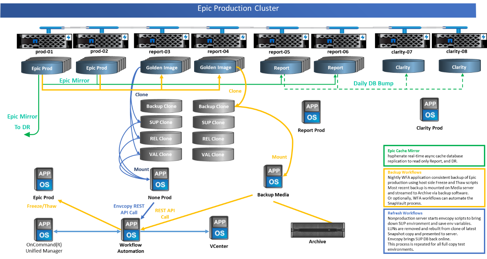
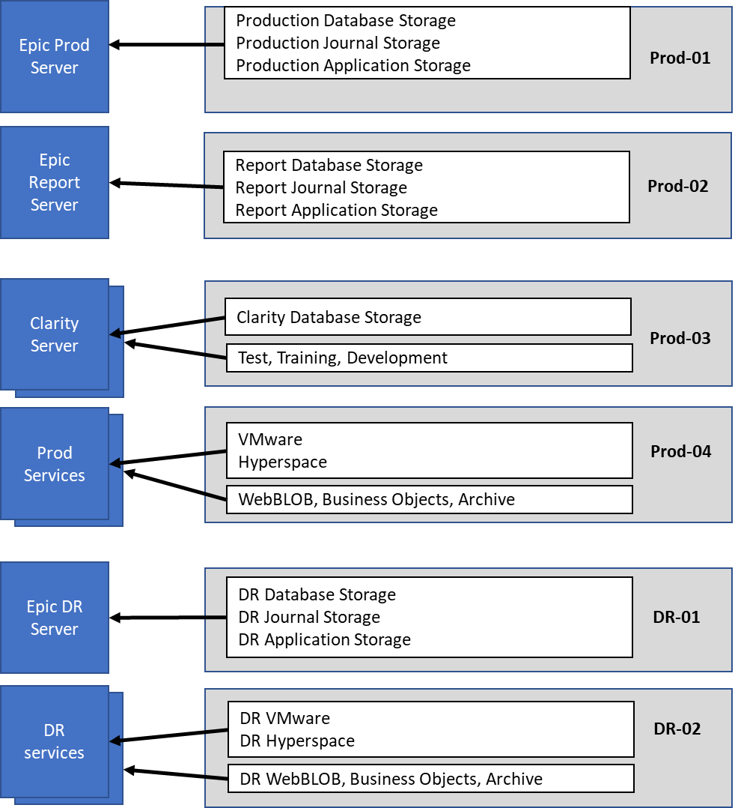

Design
Contributors
 Download PDF of this page
Download PDF of this page
The architecture of FlexPod for Epic is based both on guidance from Epic, Cisco, and NetApp and from partner experience in working with Epic customers of all sizes. The architecture is adaptable and applies best practices for Epic, depending on the customer’s data center strategy, whether small or large and whether centralized, distributed, or multitenant.
The correct storage architecture can be determined by the overall size with the total IOPS. Performance alone is not the only factor, and you might decide to go with a larger node count based on additional customer requirements. The advantage of using NetApp is that the cluster can easily be scaled up nondisruptively as requirements change. You can also nondisruptively remove nodes from the cluster to repurpose or during equipment refreshes.
Here are some of the benefits of the NetApp ONTAP storage architecture:
-
Easy nondisruptive scale up and scale out. Disks and nodes can be upgraded, added, or removed by using ONTAP nondisruptive operations. Customers can start with four nodes and move to six nodes or upgrade to larger controllers nondisruptively.
-
Storage efficiencies. Reduce total capacity requirements with deduplication, FlexClone, inline compression, inline compaction, thin replication, thin provisioning, and aggregate deduplication. The FlexClone capability allows you to almost instantly create clones to support backup and test environment refreshes. These clones consume additional storage only as changes are made.
-
Ability of OnCommand WFA workflows to back up and refresh Epic full-copy test environments. This solution simplifies the architecture and saves on storage capacity with integrated efficiencies. These architectures factor in the backup solution for Epic and leverage storage integration to integrate with any backup solution.
-
DR shadow database server. The DR shadow database server is part of a customer’s business continuity strategy (used to support storage read-only [SRO] functionality and potentially configured to be a storage read-write [SRW] instance). Therefore, the placement and sizing of the third storage system are in most cases the same as in the production database storage system.
-
Database consistency (requires some consideration). If SnapMirror backup copies are used in relation to business continuity, see the document “Epic Business Continuity Technical Solutions Guide. ” For information about the use of SnapMirror technologies, see TR-3446: SnapMirror Async Overview and Best Practices Guide.
-
Isolation of production from potential bully workloads is a key design objective of Epic. A storage pool is a fault domain in which workload performance must be isolated and protected. Each node in an ONTAP cluster is a fault domain and can be considered as a pool of storage.
All platforms in the ONTAP family can run the full host of feature sets for Epic workloads.
Storage architecture
The figure below depicts a 6-node architecture, which is a commonly deployed architecture in Epic environments. There is also a 4- node or 12- node deployment, but these architectures are simply a reference or starting point for the design. The workloads must be validated in the SPM sizing tool for the number of disks and controller utilization. All Epic production is deployed on AFF arrays. See the Epic All-Flash Reference Architecture Strategy Handbook for Epic storage layout requirements.

|
Work with the NetApp Epic team to validate all designs. Epic requires the use of NetApp sizing methods to properly size a NetApp storage system for use in Epic environments. For more information, see TR-3930i: NetApp Sizing Guidelines for Epic. NetApp Field Portal access is required to view this document. |
The six-node architecture contains four nodes for production and two nodes for DR. With this architecture, with four-node production, the Epic All-Flash Reference Architecture Strategy Handbook states that you can separate Epic report workloads from Clarity.
Going with six nodes has the following key advantages:
-
You can offload backup archive process from production
-
You can offload all test environments from production
Production runs on node prod-01. Report runs on node prod-02, which is an up-to-the-minute Epic mirror copy of production. Test environments such as support, release, and release validation (SUP, REL, and RELVAL) can be cloned instantaneously from either Epic production, report, or DR. The following figure shows clones made from production for full-copy test environments.
The second HA pair is used for production services storage requirements. These workloads include storage for Clarity database servers (SQL or Oracle), VMware, Hyperspace, and CIFS. Customers might have non-Epic workloads that could be added to nodes 3 and 4 in this architecture or preferably added to a separate HA pair in the same cluster.
SnapMirror technology is used for storage-level replication of the production database to the second HA. SnapMirror backup copies can be used to create FlexClone volumes on the second storage system for nonproduction environments such as support, release, and release validation. Storage-level replicas of the production database can also support customers’ implementation of their DR strategy.
Optionally, to be more storage efficient, full-test clones can be made from the report Snapshot copy backup and run directly on node 2. With this design, a SnapMirror destination copy is not required to be saved on disk.

Storage design and layout
The first step toward satisfying Epic’s HA and redundancy requirements is to design the storage layout specifically for the Epic software environment, including isolating disk pool 1 from disk pool 2 onto dedicated high-performance storage. See the Epic All-Flash Reference Architecture Strategy Handbook for information about what workloads are in each disk pool.
Placing each disk pool on a separate node creates the fault domains required for Epic isolation of production and nonproduction workloads. Using one aggregate per node maximizes disk utilization and aggregate affinity to provide better performance. This design also maximizes storage efficiency with aggregate-level deduplication.
Because Epic allows storage resources to be shared for nonproduction needs, a storage system can often service both the Clarity server and production services storage needs, such as VDI, CIFS, and other enterprise functions.
The figure below shows the storage layout for the 6-node architecture. Each storage system is a single node in a fully redundant HA pair. This layout ensures maximum utilization on each controller and storage efficiency.

Storage node configuration
High availability
Storage systems configured with nodes in an HA pair mitigate the effect of node failure and enable nondisruptive upgrades of the storage system. Disk shelves connected to nodes with multiple paths increase storage resiliency by protecting against a single-path failure while providing improved performance consistency during a node failover.
Hardware- assisted failover
Hardware-assisted failover minimizes storage node failover time by enabling the remote LAN module or service processor module of one node to notify its partner of a node failure faster than a heartbeat-timeout trigger, reducing the time elapsed before failover. When storage is virtualized, failover times improve because controller identity does not need to move during failover. Only software disk ownership changes.
NetApp Support tools and services
NetApp offers a complete set of support tools and services. The NetApp AutoSupport tool should be enabled and configured on NetApp storage systems to call home if a hardware failure or system misconfiguration occurs. For mission-critical environments, NetApp also recommends the SupportEdge Premium package, which provides access to operational expertise, extended support hours, and fast response times on parts replacement.
All-flash optimized personality on AFF A300 and AFF A700 controllers
For the AFF solution to function properly, the environment variable bootarg.init.flash_optimized must be set to true on both nodes in an HA pair of all-flash-optimized FAS80x0 systems. Platforms with the all-flash-optimized personality support only SSDs.
Volume configuration
Snapshot Copies
A nightly volume-level Snapshot schedule should be set for volumes that provide storage for the production database. Volume-level Snapshot copies can also be used as the source for cloning the production database for use in nonproduction environments such as development, test, and staging. NetApp has developed OnCommand WFA workflows for Epic that automate the backup of production databases and the refresh of test environments. These workflows freeze and thaw the database for application-consistent Snapshot copies. The backup copies of production are automatically presented to test servers for support, release, and release validation. These workflows can also be used for backup streaming and integrity checks.
Snapshot copies can be used to support the restore operations of Epic’s production database.
You can use SnapMirror to maintain Snapshot copies on storage systems separate from production.
For SAN volumes, disable the default Snapshot policy on each volume. These Snapshot copies are typically managed by a backup application or by OnCommand WFA workflows. NetApp recommends turning on all efficiency settings to maximize disk utilization.
Volume affinity
To support concurrent processing, ONTAP assesses its available hardware on startup and divides its aggregates and volumes into separate classes, called affinities. In general terms, volumes that belong to one affinity can be serviced in parallel with volumes that are in other affinities. In contrast, two volumes that are in the same affinity often have to take turns waiting for scheduling time (serial processing) on the node’s CPU.
The AFF A300 and AFF A700 have a single aggregate affinity and four volume affinities per node. For best node utilization and use of volume affinity, the storage layout should be one aggregate per node and at least four volumes per node. Typically, eight volumes or LUNs are used for an Epic database.
LUN configuration
The document “Epic Database Storage Layout Recommendations” details the size and number of LUNs for each database. It is important for the customer to review that with Epic support and finalize the number of LUNs and LUN sizes; they might need to be adjusted slightly.
Starting with larger size LUNs is recommended because the size of the LUNs themselves has no cost to storage. For ease of operation, make sure that the number of LUNs and initial size can grow well beyond expected requirements after three years. Growing LUNs is much easier to manage than adding LUNs when scaling. With thin provisioning on the LUN and volume, only storage used shows in the aggregate.
Use one LUN per volume for Epic production and for Clarity. For larger deployments, NetApp recommends 24 to 32 LUNs for Epic databases.
Factors that determine the number of LUNs to use are:
-
Overall size of the Epic DB after three years. For larger DBs, determine the maximum size of the LUN for that OS and make sure that you have enough LUNs to scale. For example, if you need a 60TB Epic database and the OS LUNs have a 4TB maximum, you would need 24 to 32 LUNs to provide scale and headroom.
|
|
Epic requires database, journal, and application or system storage to be presented to database servers as LUNs through FC. |
 Edit on GitHub
Edit on GitHub